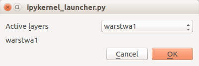

Framework pyQt - budowanie interace cz.1¶
Wieloplatformowy framework przeznaczony do wykonywania aplikacji wieloplatformowych, bez konieczności modyfikacji kodu. W programowaniu geoinformacyjnym najbardziej znanym narzędziem wykonanym w tej technologii jest QQGIS. Zaletą Qt jest przede wszystkim kompletny zestaw elementów (widgetów) pozwalających na tworzenie interface graficznego, nie tylko w języku C++ ale również bezpośrednio w języku Python (PtQt). W obecnej wersji QGIS używana jest wersja 5 frameworka, w wersji 2.x używana była wersja 4.x. Różnice pomiędzy wersjami nie są duże, dotyczą sposobu inicjowania klas lokalizacji niektórych komponentów w innych modułach: Moduł QtGui rozdzielono na QtGui i QtWidgets.
from PyQt5.QtCore import *
from PyQt5.QtGui import *
from PyQt5.QtWidgets import *
import sys
Aby korzystać z interface graficznego w innym edytorze niż QGIS, należy uruchomić aplikację Qt - w tym wypadku zbudowac obiekt QApplication (nie będzie potrzebny w QGIS):
app=QApplication(sys.argv)
Definiowanie ram aplikacji¶
Tworzenie aplikacji rozpoczyna się od utworzenia klasy o dowolnie wybranej nazwie (tu: dialogForm), która jest klasą potomną dl QDialog). W tym kroku jedynie co zrobimy dodatkowo to w funkcji __init__ ustawimy rozmiar formy na 300 \(\times\) 200 px
class dialogForm(QDialog):
def __init__(self):
super().__init__()
self.resize(300,200) #1
A następnie utworzymy obiekt mojDialog i wyświelmy go poleceniami .show() i app.exec_():
mojDialog = dialogForm()
mojDialog.show()
app.exec_()
Informacja
Powyższy zestaw poleceń należy wywołać po każdej modyfikacji klasy. W dalszej części nie będą one powtarzane.
Widget Standardowy Cancel|OK¶
Forma nie posiada żadnych elementów. W następnym kroku dodamy przyciski poleceniami: QDialogButtonBox(self) oraz ustawimy ich własności na tzw widget standardowy: (Cancel,OK). Polecenia te nie są jeszcze aktywne. Ich aktywizacją zajmiemy się w dalszej części samouczka.
class dialogForm(QDialog):
def __init__(self):
super().__init__()
self.resize(300,200) #1
buttonBox = QDialogButtonBox(self)
buttonBox.setStandardButtons(QDialogButtonBox.Cancel|QDialogButtonBox.Ok)
Prosty layout¶
Zwróćmy uwagę na bezsensowne ustawienie przycisku. Forma sama w sobie umieści w lewym górnym rogu. Jeżeli chcemy zmienić ich ustawienie należy zastosować tzw. layout.
Jest kilka rodziajów layoutów: poziomy QHBox - rozmieszcza obikety poziomi, pionowy QVBox - pionowo i QGrid w siatce. Jeżeli chcemy kontrolować względne położenie należy dodać tzw Strech czyli wypełniacz. Obiekty w layout układane są od góry (QVBox) lub od lewej (QHBox) w kolejności pojawiania się na liście. Na końcu trzeba przypisać layout do obiektu nadrzędnego self. W poniższym przykładzie wymusimy położenie przycisków w pionie, i wyrównać do dołu - a więc najpierw dodajemy wypełniacz (stretch) potem widget.
Po dodaniu Button box w realizowanym zadaniu, budowa formatki przebiega w następujący sposób:
- dodajemy obiekt klasy QVBoxLayout o nazwie mainLayout
- Dodajemy wypełniacz (Stretch) w pierszej kolejności
- Dodajemy widget ButtonBox, jako kolejny po wypełniaczu
- Ustawiamy Layout na formatce. W efekcie nasz ButtonBox znajduje się tam gdzie powinien
class dialogForm(QDialog):
def __init__(self):
super().__init__()
self.resize(400,300) # zwiększymy rozmiar formy
buttonBox = QDialogButtonBox(self)
buttonBox.setStandardButtons(QDialogButtonBox.Cancel|QDialogButtonBox.Ok)
mainLayout=QVBoxLayout() #1
mainLayout.addStretch() #2
mainLayout.addWidget(buttonBox) #3
self.setLayout(mainLayout) #4
Rozbudowa layout i kolejne widgety¶
Zbudowanie bardziej złożonego układu wymaga dodania kolejnych BoxLayoutów, każdy z własną zawartością. W tej części dodamy ComboBox (listę rozwijaną) w której znajdą się trzy napisy do wyboru: “warstwa1”,“warstwa2”,“Ostatna warstwa”, ale jako pierwszy będzie wpis pusty - “”.
W tym celu po ustaleniu nowego kształtu formatki:
- Tworzymy nowy BoxLayout, tym razem poziomy, co oznacza że elementy będą dodawane od lewej do prawej. Nazywamy go comboLayout
- Tworzymy obiekt - etykietę (QLabel), która przechowuje napisy.
&oznacza że litera za nim będzie klawiszem aktywnym - Tworzymy obiekt listę rozwijaną (QComboBox)
- Łączymy etykietę z listą jako tzw Buddies. Dokładnie to do etykiety dołączamy ComboBox
- Dodajemy etykietę a następnie listę do comboLayout-u
- Następnie do listy chooseCombo dodajemy elementy listy poleceniem addItems
- następnie wykorzystując kod z poprzedniej części dodajemy jedynie ponad widgetem ButtonBox poziomy layout zawierający listę wraz z etykietą
Powyższa kolejność nie jest obowiązkowa. Na przykład listę rozwijalną (3) możemy utworzyć na początku, od razu możemy też dodać zawartość (6), istotna jest natomiast kolejność dodawania widgetów i layoutów do layoutów wyższego rzędu. Oczywiście modyfikacja i dodawanie obiektów jest możliwe dopiero po ich utworzeniu.
class dialogForm(QDialog):
def __init__(self):
super().__init__()
self.resize(400,100) # zmniejszamy rozmiar formy
# wewnętrzny layout z etykietą
comboLayout=QHBoxLayout() #1
comboLabel=QLabel("Active &layers") #2
chooseCombo=QComboBox() #3
comboLabel.setBuddy(chooseCombo) #4
comboLayout.addWidget(comboLabel) #5
comboLayout.addWidget(chooseCombo) #5
# dodanie zawartości
layer_list = ["","warstwa1","warstwa2","Ostatna warstwa"]
# pierwsza linia zostaje pusta
chooseCombo.addItems(layer_list) #6
# ButtonBox i główny layout
buttonBox = QDialogButtonBox(self)
buttonBox.setStandardButtons(QDialogButtonBox.Cancel|QDialogButtonBox.Ok)
mainLayout=QVBoxLayout()
mainLayout.addStretch()
mainLayout.addLayout(comboLayout) #7
mainLayout.addWidget(buttonBox)
self.setLayout(mainLayout)
Dodanie interakcji¶
Interakcja sygnał-uchwyt (SIGNAL-SLOT)¶
Obecnie przyciski są nieaktywne, tzn nie wykonują żadnej akcji. Aby można było je ożywić należy zastosować mechanizmy programowania zdarzeniowego, właściwego dla graficznych interface.
Z każdym widgetem powiązana jest pewna ilość zdarzeń (event), które emitują sygnał (SIGNAL). Sygnały są powiązane z uchwytami (SLOT), które są aktywowane w przypadku emisji sygnału. Sloty zawierają funkcje (wbudowane lub użytkownika) które są wywoływane przy aktywacji uchwytu. Na przykład widget DialogButtonBox może wyemitować sygnały “accepted()” (OK) lub “rejected()” (Cancel), które zostaną połączone z uchwytami zawierającymi funkcje “accept()” i “reject()”. Od tego momentu możemy zamknąć formę klikając OK.
Aby dodać połączenia dodajemy dwie linie:
- Dla obiektu ButtonBox łączymy jego sygnał accepted z wbudowaną funkcją accept()
- Dla obiektu ButtonBox łączymy jego sygnał rejected z wbudowaną funkcją reject()
Ponieważ obie funkcje odnoszą się do formy muszą być poprzedzone przez self.
class dialogForm(QDialog):
def __init__(self, parent=None):
super(dialogForm, self).__init__(parent)
self.resize(400,100) # zmniejszamy rozmiar formy
comboLayout=QHBoxLayout()
comboLabel=QLabel("Active &layers")
chooseCombo=QComboBox()
comboLabel.setBuddy(chooseCombo)
comboLayout.addWidget(comboLabel)
comboLayout.addWidget(chooseCombo)
layer_list = ["","warstwa1","warstwa2","Ostatna warstwa"]
chooseCombo.addItems(layer_list)
buttonBox = QDialogButtonBox(self)
buttonBox.setStandardButtons(QDialogButtonBox.Cancel|QDialogButtonBox.Ok)
mainLayout=QVBoxLayout()
mainLayout.addStretch()
mainLayout.addLayout(comboLayout)
mainLayout.addWidget(buttonBox)
self.setLayout(mainLayout)
# Sekcja połączeń
buttonBox.accepted.connect(self.accept) #1
buttonBox.rejected.connect(self.reject) #2
Zbudowanie własnych funkcji slotowych i interakcja między obiektami¶
Bardziej złożone zachowania formatek wymagają oporogramowania zachowania się poszczególnych elementów w zależności od zachodzących w ramach formatki zdarzeń. Pozwala to reagować na zachowania użytkowników jeszcze przed podjęciem ostatecznej decyzji. W naszym przykładzie dodamy dodakowy element - etykietę QLabel, której zawartość będzie się zmieniać w zależności od pozycji wybranej na liście chooseCombo.
Aby zadanie w ogóle było wykonane, zarówno listę wyboru jak i etykietę, której zawartość będziemy zmieniać musimy uczynić widoczną w całej klasie (obecnie widoczne są jedynie w obrębie funkcji __init__). W tym celu musimy przypisać je do głównego obiektu (self). Wykonujemy to w
punkcie #0
- Dodajemy nowy obiekt - etykietę. Jako domyślnie wyświetlaną zawartość wpisujemy “Nic” - lub cokolwiek innego
- Dodajemy jako widget do głównego layoutu mainLaout poniżej layoutu zawierającego listę i etykietę
- Tworzymy funkcję set_text() jako składową klasy (self)
- Tworzymy zmienną index, któą pobieramy z aktualnego stanu chooseCombo metodą .currentIndex()
- Pobieramy nazwę (string) z listy layer_list i przypisujemy ją do zmiennej layer
- Zmieniamy tekst w etykiecie infoLabel na zawartość zmiennej layer
- Sygnał emitowany przez obiekt chooseCombo o nazwie currentIndexChanged łączymy z funkcją set_text.
W efekcie za każdym razem, gdy wybierzemy inną pozycję na liście zmieni się też zawartość etykiety.
Do samodzielnego przemyślenia: co zrobić, aby w przypadku wybrania łańcucha pustego, przywrócić etykiecie zawartość “Nic”
Poniżej znajduje się pełen kod formatki wraz z podstawową interakcją:
class dialogForm(QDialog):
def __init__(self):
super().__init__()
self.resize(400,100)
# wewnętrzny layout z etykietą
comboLayout=QHBoxLayout()
comboLabel=QLabel("Active &layers")
self.chooseCombo=QComboBox() #0
comboLabel.setBuddy(self.chooseCombo)
comboLayout.addWidget(comboLabel) #0
comboLayout.addWidget(self.chooseCombo)
self.layer_list = ["","warstwa1","warstwa2","Ostatna warstwa"] #0
self.chooseCombo.addItems(self.layer_list) #0
# ButtonBox i główny layout
buttonBox = QDialogButtonBox(self)
buttonBox.setStandardButtons(QDialogButtonBox.Cancel|QDialogButtonBox.Ok)
self.infoLabel = QLabel("Nic") #1
# dodawanie do layout
mainLayout=QVBoxLayout()
mainLayout.addStretch()
mainLayout.addLayout(comboLayout)
mainLayout.addWidget(self.infoLabel) #2
mainLayout.addWidget(buttonBox)
self.setLayout(mainLayout)
# Sekcja połączeń
buttonBox.accepted.connect(self.accept)
buttonBox.rejected.connect(self.reject)
self.chooseCombo.currentIndexChanged.connect(self.set_text) #7
def set_text(self): #3
index = self.chooseCombo.currentIndex() #4
layer = self.layer_list[index] #5
self.infoLabel.setText(layer) #6
.
